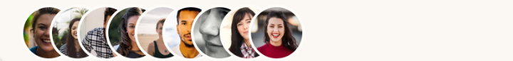

Chirp.

Twitter analytics taken to a whole new level
Chirp is a suite of Twitter analytics that will help you better understand your audience, which tweets they like, and most importantly, when they are the most active on Twitter
Learn more
Join 195 others who have analyzed their followers and scheduled 1342 tweets!
Features that help you Tweet smarter.

Analytics
We constantly monitor your audience as it grows, so you can Tweet when your followers are most likely to be online and ready to engage with your content.
Smart Analyzer
Chirp automatically recognizes your follower's most active times and automatically sends you notifications if you're missing out on an opportunity.
Schedule Your Tweets
Quality tweets drive tons of engagement. With Chirp, you can write tweets in advance and schedule them when your audience is most likely to read
Dark Mode
Friendly on the eyes, no matter what time you write your Tweets. All colors are chosen to make sure your eyes are at ease at all times.
What our customers say
One simple price plan.
Start growing your Twitter account by analyzing your follower's patterns.